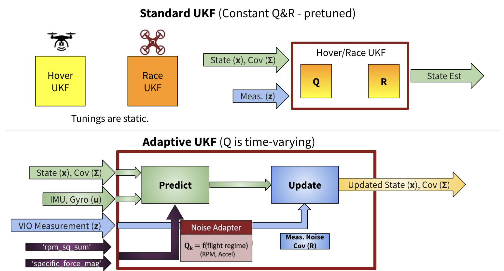
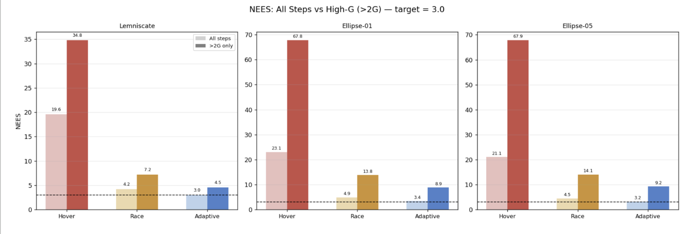
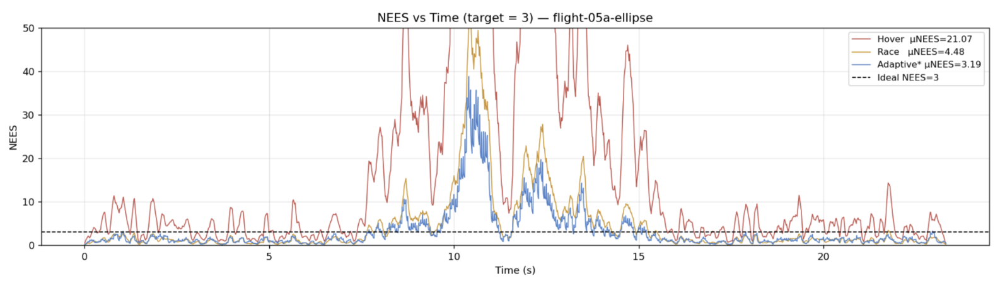
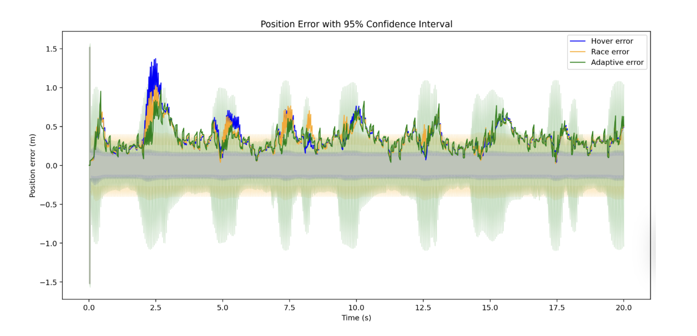

Adaptive Unscented Kalman Filter for FPV Drone Racing
Project Description
First-Person-View (FPV) drones pull 5G turns and vibrate violently. Standard flight filters like the Unscented Kalman Filter use static noise assumptions that break down in these conditions. If it is tuned for a smooth hover, it becomes overconfident during aggressive racing, but if it is tuned for racing, it ignores perfectly good sensor data during calm flight.
The root cause is heteroscedasticity: the noise injected into the accelerometer and gyroscope signals is not constant. Motor RPM-induced structural vibrations scale with rotor kinetic energy ($\propto \Omega^2$), while MEMS sensor nonlinearity amplifies errors under high G-loading.
We built a predictive, physics-informed Adaptive Unscented Kalman Filter (AUKF). Instead of using a static process noise matrix ($Q$), our algorithm recomputes it at every prediction step using two physical proxies:
- Rotor Vibration: Proportional to normalized motor RPM squared.
- Sensor Non-linearity: Proportional to excess G-loading on the IMU above hover.

We built this in Python and simulated the sensors in PyBullet before testing on 18 real-world flights from the TII Drone Racing Dataset.
System Model
State Representation
The quadrotor state is a 10-dimensional vector combining position, velocity, and attitude as a unit quaternion. Because the quaternion lives on a manifold, the UKF operates on a 9-dimensional error-state $\boldsymbol{\xi} = [\delta\mathbf{p},\, \delta\mathbf{v},\, \delta\boldsymbol{\theta}]^\top$ where $\delta\boldsymbol{\theta}$ is the local rotation-vector attitude error.
Prediction Step (IMU as Control Input)
IMU measurements — body-frame specific force $\mathbf{a}_b$ and angular rate $\boldsymbol{\omega}_b$ — serve as the control input $\mathbf{u}_k$ driving the prediction step:
where $\mathbf{g}_w = [0,0,-9.81]^\top$\,m/s² and $\operatorname{quat}(\cdot)$ converts a rotation vector to a unit quaternion.
Measurement Step (VIO Position)
Visual-Inertial Odometry (VIO) provides position updates. The measurement model is a simple state extraction:
VIO is a camera-based system and is not degraded by motor vibration, so its noise covariance is fixed: $\mathbf{R} = \sigma_{\text{vio}}^2\,\mathbf{I}_3$ with $\sigma_{\text{vio}} = 0.05$\,m.
UKF Backbone
All three filter variants (Hover, Race, Adaptive) share the same Merwe-scaled sigma-point UKF with parameters $\alpha=0.1$, $\beta_{\text{ukf}}=2$, $\kappa=0$, generating $2n+1 = 19$ sigma points from the $n=9$ error-state. Two implementation details were critical:
- Quaternion sigma points: Perturbations in the attitude component are applied via the retraction $\mathbf{q} \leftarrow \mathbf{q} \otimes \operatorname{quat}(\delta\boldsymbol{\theta})$, preserving unit norm throughout propagation.
- Intrinsic weighted mean: The posterior mean is computed iteratively in the error-state tangent space until convergence ($\|\delta\mathbf{x}\| < 10^{-10}$, typically 3–5 iterations), maintaining manifold integrity.
Adaptive Noise Model
Why Adapt Q, Not R?
Our original proposal modeled heteroscedastic noise as a dynamic measurement covariance $\mathbf{R}_k$. During implementation we recognized that IMU readings — which are corrupted by motor vibration and G-loading — enter the filter as process inputs, not as measurements. VIO position measurements are unaffected by motor dynamics. Adapting $\mathbf{Q}_k$ is therefore the physically correct location for the heteroscedastic model.
Time-Varying Q Formulation
At each prediction step, the adaptive filter computes a diagonal $\mathbf{Q}_k$ where each per-component variance is a static floor plus two physics-informed terms:
RPM Vibration Term
Vibration energy injected into the IMU is proportional to total rotor kinetic energy, which scales as $\Omega_i^2$. The normalized term is bounded in $[0, 1]$, keeping the scaling coefficients $\alpha$ human-interpretable:
G-Loading Term (with Gravity Subtraction)
MEMS accelerometers exhibit nonlinear errors under high acceleration. We define an excess G-loading term that only activates above the hover baseline. The gravity-subtraction step is critical: without it, the raw specific-force magnitude at hover ($\approx 9.81$\,m/s²) would chronically inflate $\mathbf{Q}$ even in calm flight.
Hyperparameter Configurations
The G-loading coefficients $\beta$ were reduced by $100\times$ from initial estimates via a grid search minimizing $|\bar{\text{NEES}} - 3|$ on three representative flights. Each variance is clipped to $[\sigma^2_{\text{base}},\, \sigma^2_{\max}]$ to prevent unbounded inflation.
| Parameter | Hover UKF | Race UKF | Adaptive UKF |
|---|---|---|---|
| $\sigma^2_{p,\text{base}}$ | $1\times10^{-5}$ | $5\times10^{-5}$ | $3\times10^{-5}$ |
| $\sigma^2_{v,\text{base}}$ | $5\times10^{-3}$ | $5\times10^{-2}$ | $2\times10^{-2}$ |
| $\sigma^2_{\theta,\text{base}}$ | $1\times10^{-5}$ | $5\times10^{-5}$ | $3\times10^{-5}$ |
| $\alpha_p$ | — | — | $2\times10^{-4}$ |
| $\alpha_v$ | — | — | $5\times10^{-2}$ |
| $\alpha_\theta$ | — | — | $2\times10^{-4}$ |
| $\beta_p$ | — | — | $1\times10^{-6}$ |
| $\beta_v$ | — | — | $2\times10^{-4}$ |
| $\beta_\theta$ | — | — | $1\times10^{-6}$ |
| $\sigma^2_{\text{vio}}$ | $0.05^2$ | $0.10^2$ | $0.05^2$ |
Experimental Setup
TII Drone Racing Dataset
We validated on 18 flights from the TII Drone Racing Dataset, covering three track geometries: lemniscate (figure-8), ellipse, and circle. Each flight provides IMU readings at ~500 Hz, VIO estimates at ~277 Hz, and motion-capture (MoCap) ground truth.
We artificially subsampled VIO to 30 Hz. At the full 277 Hz rate, frequent position corrections mask differences between filter configurations. At 30 Hz, the IMU coasts for ~33 ms between updates, directly exposing the quality of the prediction step and thus the accuracy of $\mathbf{Q}$.
PyBullet Simulation
To complement real-data experiments with controlled conditions, we replayed TII MoCap trajectories inside a PyBullet physics simulation. A synthetic IMU with heteroscedastic noise (floor variance + RPM + G-load scaling), biases modeled as Gauss-Markov processes ($\tau = 20$\,s), and a VIO with 40 ms latency and $\sigma = 0.07$\,m were attached to the simulated drone, allowing evaluation against known synthetic noise parameters.
Evaluation Metrics
RMSE measures position accuracy:
NEES measures filter calibration — whether the filter's stated uncertainty matches its actual error. For a correctly calibrated 3-DOF estimator, $\mathbb{E}[\text{NEES}] = 3$. Values $\gg 3$ indicate overconfidence, a safety-critical failure mode in autonomous systems.
Results
NEES Comparison
Our AUKF achieved a mean NEES of 3.0–3.4 across all three track geometries — near the theoretical ideal of 3.0. The hover-tuned baseline failed catastrophically with NEES up to 67.9 during high-G maneuvers, over 22× the calibrated ideal.

| Track | Hover UKF | Race UKF | Adaptive UKF |
|---|---|---|---|
| Lemniscate | 19.6 / 34.8 | 4.2 / 7.2 | 3.0 / 4.5 |
| Ellipse-01 | 23.1 / 67.8 | 4.9 / 13.8 | 3.4 / 8.9 |
| Ellipse-05 | 21.1 / 67.9 | 4.5 / 14.1 | 3.2 / 9.2 |
The Race UKF improves over Hover but remains overconfident ($\bar{\text{NEES}} \approx 4.5$) and degrades significantly at high G. The Adaptive UKF maintains calibration significantly better during high-G segments.
NEES Over Time
The Hover UKF exhibits chronic overconfidence punctuated by extreme spikes (>40) during the high-G phase. The Race UKF is better but still peaks above 30. The Adaptive UKF closely tracks the target of 3, with spikes reflecting genuinely harder segments rather than filter miscalibration.

Position Error with Confidence Intervals
All three filters achieve similar raw position errors (~0.1–0.3 m), confirming that RMSE alone is insufficient to distinguish filter quality. Critically, the Adaptive UKF's 95% confidence interval closely envelopes the actual error, while the Hover UKF's is far too tight (overconfident) and the Race UKF's is unnecessarily wide.

PyBullet Simulation Results
In the PyBullet simulation with a synthetic heteroscedastic IMU, the AUKF achieved NEES = 2.97 — essentially the theoretical ideal — while slightly increasing RMSE. This is expected: a well-calibrated filter correctly widens its covariance to acknowledge uncertainty rather than staying artificially tight.
| Filter | RMSE [m] | NEES |
|---|---|---|
| Hover UKF | 0.192 | 19.58 |
| Race UKF | 0.196 | 4.17 |
| Adaptive UKF | 0.224 | 2.97 |
Discussion
Why NEES Matters More Than RMSE
All three filters produce comparable RMSE (<0.25 m). A system designer optimizing purely for RMSE would not distinguish them. However, a filter with NEES = 20 is reporting 20× more confidence than warranted. In a downstream sensor fusion architecture — where position uncertainty gates loop corrections, trusts other sensors, or triggers safety maneuvers — an overconfident state estimate can cause catastrophic failures even with low average error. The Adaptive UKF's NEES ≈ 3 guarantees that its stated uncertainty is truthful.
Alpha vs. Beta Contribution
The RPM-vibration term $r_k \in [0,1]$ contributes modestly in practice: normalized motor thrust at typical racing RPM is only ~0.06 of maximum. The G-loading term $g_k$ is unbounded and dominates the adaptation. The $100\times$ reduction in $\beta$ relative to initial values was necessary to prevent the G-term from chronically overinflating $\mathbf{Q}$ during the sustained high-G segments typical in racing.
Simulation RPM Normalization Artifact
A notable discrepancy emerged in the PyBullet experiments. The simulation configures the drone with a max motor speed of 35,000 RPM, while the AUKF normalization was parameterized for 12,000 RPM. Because the code normalizes using the smaller constant, actual in-flight $r_k$ values are not bounded in $[0,1]$ as intended — at typical racing RPM near 16,000, $r_k \approx 1.78$, and at higher throttle $r_k$ can reach ~8.5. As a result, $\mathbf{Q}$ in simulation is permanently saturated at its maximum capped value regardless of instantaneous flight intensity.
Paradoxically, simulation NEES ≈ 2.97 remains near ideal. When $\mathbf{Q}$ is persistently overinflated, the filter reports correspondingly large covariance $\mathbf{P}$, and NEES is the ratio of squared error to reported covariance — so if both inflate proportionally, the ratio stays near 3. The filter is consistently uncertain rather than adaptively uncertain. The slightly higher simulation RMSE (0.224 m vs. 0.192 m) is a direct consequence. This artifact does not affect the real-data experiments, where the $100\times$ $\beta$ downscaling effectively absorbed the overinflated $r_k$.
Generalizability
The parametric noise model — proportional to $\Omega^2$ and $\|\mathbf{a}\|$ — is not specific to drone racing. Any MEMS-reliant system operating across a wide dynamic range (autonomous racing cars, high-vibration industrial manipulators, high-speed aerial delivery) faces the same heteroscedastic challenge and can benefit from the same physics-informed adaptation approach.
Limitations
- RPM normalization mismatch. The simulation $\Omega_{\max}$ mismatch causes $r_k$ to exceed unity, permanently saturating $\mathbf{Q}$ at its cap. Correcting this — using the actual platform $\Omega_{\max}$ or normalizing RPMs to $[0,1]$ dynamically — is a prerequisite for meaningful sim-to-real comparisons.
- Offline hyperparameter tuning. The $\alpha$ and $\beta$ coefficients are fixed after grid search. A physically different drone (different motor plant, frame stiffness, propeller configuration) will have a different vibrational transfer function requiring retuning.
- Artificial VIO subsampling. The 30 Hz VIO rate was imposed artificially. The filter architecture should be re-evaluated at native VIO rates before real-time deployment.
- Position-only NEES. NEES is computed using only the 3×3 position block of the full 9×9 covariance. Calibration of the velocity and attitude covariances is not directly evaluated.
- Static measurement noise. The VIO noise covariance $\mathbf{R}$ is held constant. Real VIO degrades in visually ambiguous environments; a fixed $\mathbf{R}$ will cause overconfident updates in those scenarios.
Next Steps
- Dynamic RPM normalization. Normalize each motor's RPM to $[0,1]$ using the platform-reported maximum, or estimate $\Omega_{\max}$ online from a running maximum window. This would also gracefully handle motor degradation over time.
- Online hyperparameter adaptation. Treat $(\alpha, \beta)$ as states in an augmented filter and use the innovation sequence to update them in flight, enabling self-calibration on a new platform without prior flights.
- Full-state NEES evaluation. Extend the calibration metric to the full 9-dimensional error-state (position, velocity, attitude) using MoCap differentiation for ground-truth velocity.
- Hardware deployment. Port the algorithm to C++ for onboard flight computer deployment and profile the per-step $O(n^2)$ $\mathbf{Q}$ computation and quaternion manifold operations against real-time throughput requirements.
- Predictive noise adaptation. Use the drone's planned trajectory to predict future noise levels ahead of time — inflating $\mathbf{Q}$ before a sharp corner rather than during it, when the flight controller exposes waypoint targets in advance.